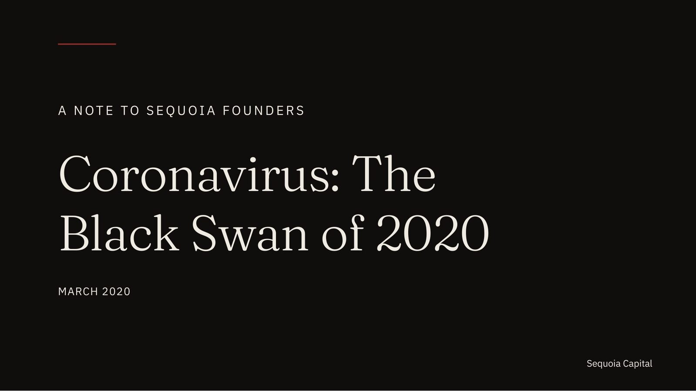
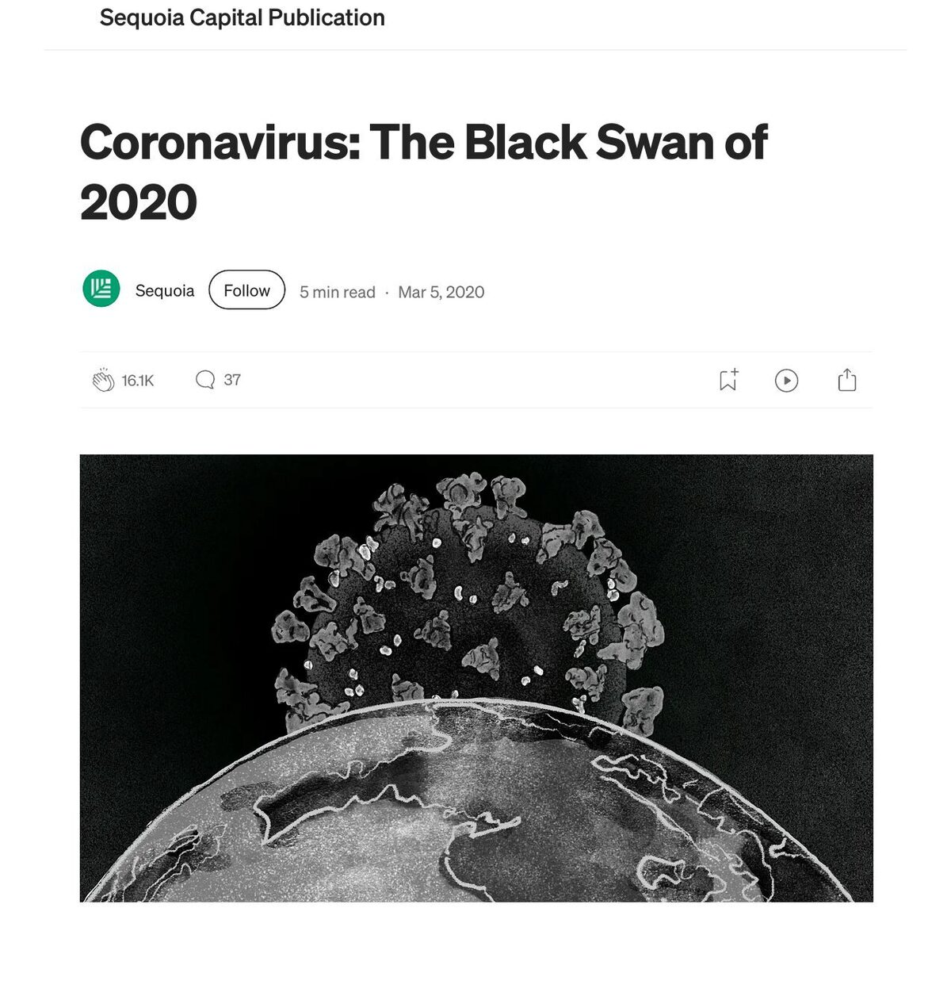
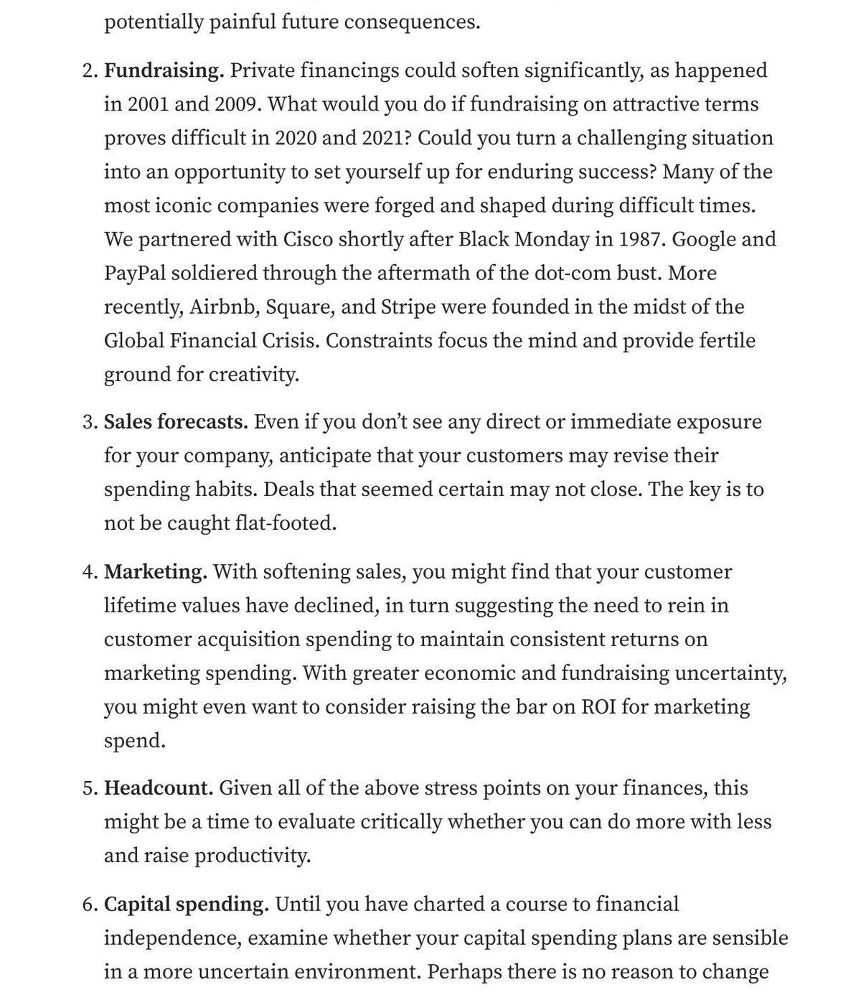
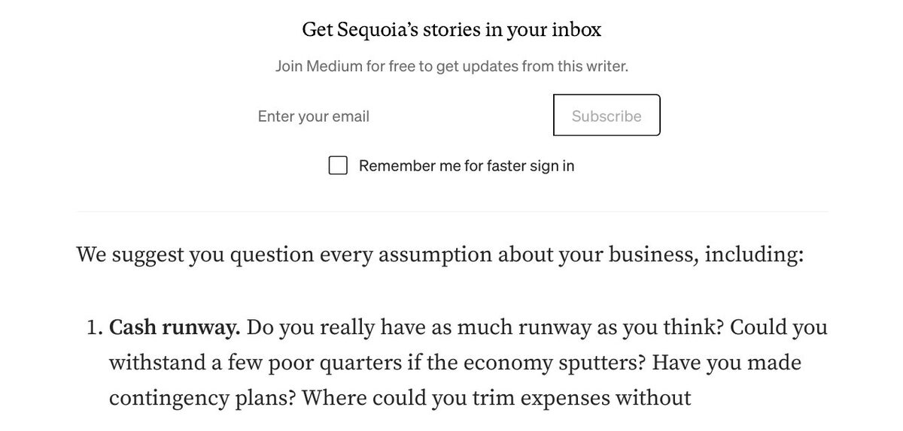

Same memo as 2020, set for the record: no virus illustration, no platform chrome, no inline list — only type and pace.
On March 5, 2020, Sequoia Capital sent a letter to the founders and CEOs of its portfolio companies titled "Coronavirus: The Black Swan of 2020." The world had been watching the spread of a novel coronavirus for ten weeks; the World Health Organization would not declare a pandemic for another six days. The letter was direct, paternal, and short — eight hundred words on how to think about cash, fundraising, and headcount when the ground beneath the business is moving. Within seventy-two hours it was the most-circulated document in venture capital. Within a year it had been quoted, paraphrased, and footnoted in board memos, investor updates, and annual letters across the industry.
The conventional verdict is that the memo's standing transcended its medium — that the prose was direct enough, the structure clear enough, that it didn't matter the thing was published as a Medium post under a stock illustration of a coronavirus particle. The verdict is half a compliment. The other half is: a document that gets quoted in board memos for six years and counting was always going to outlive its publishing surface, and deserved to be set as the thing it has since become.
This redesign is the staging exercise. Same fifteen pages, same words, same memo — set as the document of record rather than the article it was uploaded as. Not slicker. Not more corporate. Quieter. The bet is that an argument this composed reads even better when nothing else is competing for the page.
The documentary label above the title. The Fraunces Light wordmark carrying the page on its own. A single oxblood rule no longer than a wax seal. The cover establishes the register before the document arrives.

Cover · A Note to Sequoia Founders · Restaged 2026
The original memo is structurally near-perfect for a crisis communication. Three sentences in, the thesis is announced. The structure — situation, outlook, six numbered questions, lesson, signature — is the structure of every serious crisis letter of the last hundred years, from Eisenhower's farewell address to Buffett's annual notes. The decision to invoke prior downturns by name (Black Monday 1987, the dot-com unwind of 2001, the Global Financial Crisis of 2008) does the work no chart could do: it locates the moment historically and signals to founders that the people sending the letter have been here before.
What worked was the discipline. Eight hundred words and change. Six numbered questions, every one of which a CFO could answer with concrete numbers within a week. One quoted partner — Alfred Lin, who had lived through 2008 as an operating executive — and not one celebrity investor name beyond him. A closing benediction so plain ("stay healthy, keep your company healthy, and put a dent in the world") that it could only have been written by someone unembarrassed about meaning it. None of that is rhetorical sleight of hand. It is an argument that wants to be circulated.
What didn't work was almost entirely surface. The title sat above a stock illustration of a coronavirus particle in close-up — the visual register of the news cycle the memo was trying to give founders distance from. The body type was Medium's default. The numbered founder questions, which are the rhetorical core of the document, ran inline with the prose at body scale, so the eye passed each one in seconds rather than sitting with it. A platform-injected newsletter signup landed mid-letter ("Get Sequoia's stories in your inbox"), the kind of UI element that appears when a publishing surface and an authorial intent disagree. None of it hurt the memo's standing — the writing was strong enough to outlast its packaging. The redesign is what happens when no one has to do the favor of looking past the packaging anymore.
The brief pulled in three directions. The redesign had to make the memo feel like the historical artifact it has become — without conscripting the visual language of the news cycle the memo was trying to give founders distance from. It had to read as 2026, not as period revival, while also reading as something that could still be picked up and read in 2046. And it had to honor Sequoia's authorship of the document without borrowing Sequoia's brand.
Fraunces, in its Light weight, did the typographic work. It is a contemporary serif with a wide aperture and a slightly unsettled drawing — a Cooper-revival inheritance softened by a designer's hand. It reads as historical without performing antiquity. Times would have read as administrative; Garamond would have argued for the wrong century. The accent is oxblood, not Sequoia red. Borrowing the firm's own brand color would have collapsed the distance between the design and the institution being designed for; oxblood reads as a wax seal or a printer's accent rather than a logo. The ground is warm near-black, throughout. Cream paper would have read as letter; the dark ground reads as document — closer in register to a wall text in a museum than to a piece of correspondence.

The original cover sells the memo with a stock illustration of a coronavirus particle in close-up — the visual register of the news cycle the letter inside was trying to give founders distance from. The redesign deletes the image. The title, set in Fraunces Light at display size, has to carry the page on its own. The only ornament is a single oxblood rule, no longer than a wax seal. Three-quarters of the slide is empty because the cover doesn't need to do the persuasion — that is what the next fourteen pages are for.

The line about prior downturns — "as happened in 2001 and 2009" — sits in the original as nine words inside a paragraph about fundraising. It is the only assertion in the entire memo that is checkable against data; everything else is judgment. The redesign surfaces it as the deck's single chart. The argument behind the addition is specific: the founders Sequoia is writing to in 2020 don't need to be told what 2008 felt like, but they do need to be reminded that this has happened on a schedule. Being the only chart in the deck is what makes the chart worth showing — a second one anywhere would have made this one ordinary.

The six founder questions are the rhetorical core of the memo. In the original they survive on the strength of the writing, but the format works against them — a numbered list reads at the pace the eye sets, not the pace each question deserves. Splitting them across three paired spreads means the reader cannot finish them in under a minute. The oxblood numerals do the same job the original's "1." "2." "3." did, but at a scale that makes them the page's primary visual event rather than its smallest mark. The questions, given room, become assignments.
The original earned its standing despite its format. This is what it would have looked like if its format had been part of the standing.
The redesign is a counterfactual, not a verdict. Sequoia published the memo on a Wednesday afternoon in March and let the writing carry it. It worked. The exercise here is the smaller, more selfish question: what would the same fifteen pages look like if the visual work had been doing its share?
The answer is the deck above. Quieter. Slower. More confident in less. It is not the memo Sequoia needed to send in March 2020 — Sequoia in March 2020 needed exactly the memo it sent. It is what an investor communication could look like in 2026, made by a partner or operator or writer who has not yet earned the privilege of being read past their packaging.
For the studio, this is also a category move. The portfolio to date has been proof that Stealth Strategist can design for persuasion. This piece is the proof that Stealth Strategist can also design for record. Strategic memos, investor letters, board communications, founder updates, annual reports — documents where the brief is to disappear into the prose, where good typography earns more trust than visual invention. The pitch deck is one register. This is the other.